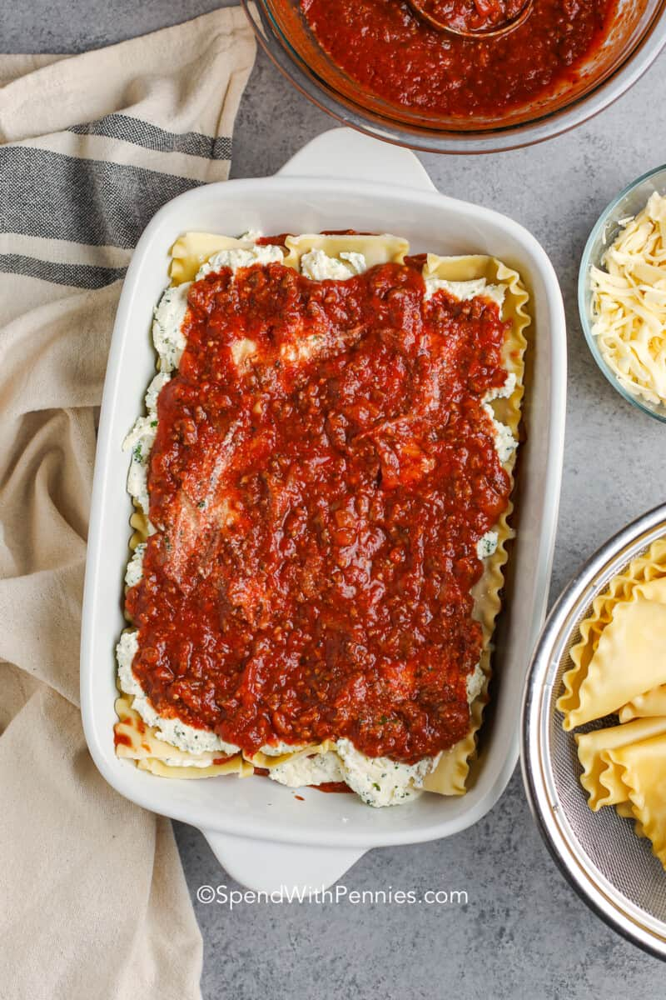
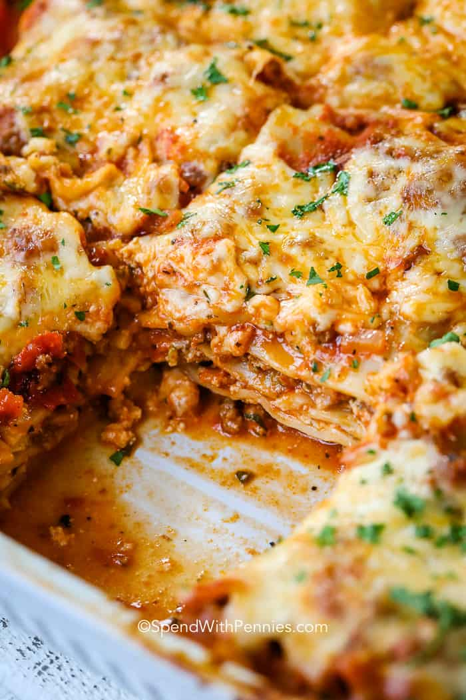

How to Make Lasagna
While there are a few steps to this lasagna recipe, it’s easy to make and has so much flavor. This dish can be made ahead of time and freezes well either before or after baking!
Homemade lasagna may have a few steps, but each step is easy – and I assure you it’s worth the time; the perfect Italian meal!
The best lasagna recipe is made with ingredients that you know, and it’s not difficult at all! All you’ll need for this easy lasagna recipe is one pan, one bowl, and a 9×13 baking dish!
Ingredients
- Beef and sausage
- Garlic
- Onion
- Egg
- Parsley
- Spices
- Ricotta cheese
- Mozzarella
- Lasagna pasta
- Tomato sauce
- Tomato paste
- Frozen spinach (optional)
Overview
- Cheese filling: For this classic lasagna recipe, the filling contains ricotta and parmesan with seasonings and a couple of tablespoons of parsley. No ricotta? No problem, cottage cheese works just fine in this recipe!
- Meat: I use both Italian sausage and ground beef for great flavor. If using all beef, add a ¼ teaspoon of fennel seeds and some Italian seasoning to the meat mixture for flavor.
- Sauce: To keep this sauce quick, I use pasta sauce or marinara sauce (it’s easy to make from scratch with crushed tomatoes and canned tomatoes if you’d prefer).
- Spinach (variation): To make a spinach lasagna, squeeze out most of the moisture of defrosted frozen spinach and add it along with the cheese layer.

How to make lasagna
Homemade lasagna may have a few steps, but each step is easy – and I assure you it’s worth the time; the perfect Italian meal! This is a really easy lasagna recipe.
- Boil pasta: Cook in a large pot of salted water per the recipe below.
- Prepare meat sauce: Cook sausage and beef with onion and garlic. Drain well, add the pasta sauce & simmer it for a few minutes to thicken.
- Combine cheese mixture: Stir the cheese mixture together in a bowl.
- Layer & bake: Layer the meat sauce and cheese mixture with lasagna noodles and bake until browned and bubbly.

Original recipe